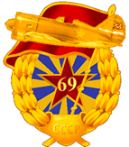
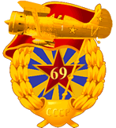

Rules of the =69.GIAP=
Okay, here's the really boring crap: The rules!!!!
But everyone in the squad needs to know them.
First thing that should be covered is the criteria which should be matched by any prospective applicant to the squad. These are the basic criteria by which all of our pilots are measured when they first join the squad, and they are in place simply to give the highest chance we can to get pilots who will be active and productive members in the squad which will benefit us, and also it will benefit you as well!!
- Applicants below the age of 18 may join with parental agreement
- Applicants over 65 must not leave their false teeth in the latrines overnight
- The applicant must speak english, american, scottish... as that's what we talk on-line
- Anyone caught talking welsh will be shot
- The applicant must have the latest version of the IL-2 Sturmovik1946, and/or Storm of War, and/or Knights of the Sky
- The applicant must have a PC which matches the minimum system specifications of IL2 1946 game
- The applicant should have an internet connection eg. 512k ADSL or better
- The applicant must have a working microphone and headphones for use with voice communications during squad meetings
We use the merged version of IL-2: Forgotten Battles, Aces Expansion Pack and Pacific Fighters, with the current version being 4.08m. In order to play online with the squad an applicant will have to have this version of the game
Preferential Criteria
(i.e. not mandatory, but desirable):
An important point that should be noted by any prospective applicant is that the 69th is a mid atlantic based squad with most of our members living in the UK, mainland Europe or Americas. This means that if you live outside of the European/US timezones, you have to consider if it will be possible for you to join in our squad meetings, and other activities. We do have members outside of Europe/USA so it is by no means impossible to fit into our schedule, but if you are going to struggle to make meeting times then you should perhaps be looking for a squad closer to your own time zone. Also, we do prefer that you have some computer literacy (most people who play PC flight sims do at least know a little something, so this isn't normally a big deal) just to keep the cogs of the squad well greased without getting stuck on simple tech problems.
Lastly we would prefer that you have some experience in playing IL-2, or at least another flight sim simply because it will make transition into the squad that much easier. But if you are relatively new to the flight sim community and are looking for somewhere to learn more, then we certainly wont turn you away!!!
Here are the general conduct rules of the regiment
Each pilot must keep in regular contact with the squad about availability for squadron activities by posting in the squad forums. While representing the squad no pilot will act in a disrespectful manner towards others in the community. This includes activities on IL-2 related websites or forums. But most importantly is this last rule:
MAKE SURE THAT YOU ARE HAVING FUN!! IF IT AIN'T FUN THEN DO SUMMIT ELSE!!
The "Meet & Greet"

Okay, now that you have read the official stuff, and figured out whether you meet the criteria set above to apply, I will explain the next step. It is easy, now you send an application through our nice *application form* and post up a hello message on the public forum. The X-O will then contact you himself, or designate another to arrange to meet you online.
Basically this is the "meet & greet" thing. One of the squad, either the Squad XO, or one of the unit commanders will arrange to meet you on MSN Messenger, or something similar, to just discuss a few preliminaries, and give you the details for voice communications. Once you are all set up on comms, then you will go into the Hyperlobby Client to meet up in a dogfight room to probably do some one on one flying just to ascertain at what level you are flying. This is also the time to ask any relevant questions you might have about the squad, about what we do, or what we don't do, or whatever. But this initial session wont be anything too serious; it is basically for us to make sure that you are PC literate, can speak english, have the right equipment, and also to see how well you fly.
One thing about the level at which we fly, we are what could be called a "full-real" squad because normally we fly with all of the difficulty markers checked in game, except for speedbar (due to visibillity issues present with the compass in many of the VVS aircraft). We sometimes do fly with externals on, but normally only during training as this makes it easier to watch demonstrations, and also just to watch the action if you die prematurely in-game. Don't worry if you haven't had a lot of practice flying with spins on, and Complex Engine Management enabled, and such things; it doesn't take long to get used to it all, and you will find that you become a far better virtual pilot by learning to fly like this. And we also have plenty of resources available for you to help you transition to this type of flying, and the other members will always be glad to help if you need it.
What happens once I have decided to join the squad? Well, what happens is you will be put onto a probationary period of 1 month where you should try to attend each Sunday practice for that month. You will be given the rank of Kadet, and your section C.O. will give you the relevant qualification missions which should be completed before the end of your probation. These missions aren't really so difficult, and there aren't too many of them, but the ones you will receive will help with your gunnery and general flying skills!! Once you've completed your 1 month probation and passed the qualification missions, assuming that you are happy to stay with us, you will be given your pilot's wings and promoted to the rank of Serzhant. How you will actually fall into the organisational structure of the squadron is covered later.